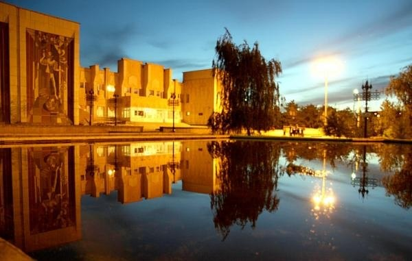
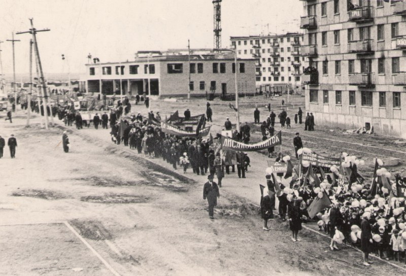

Лисаковск – это молодой, но уникальный город в Казахстане, основанный в 1971 году. Город знаменит своими рудниками, археологическими находками и особенной атмосферой.
Археологические находки свидетельствуют, что люди жили в районе Лисаковска ещё 4 000 лет назад. Здесь найдены курганы, древние поселения и захоронения эпохи бронзы.
В 1980-х годах археологи обнаружили следы Андроновской культуры – цивилизации, которая была предшественником скифов. Были найдены древние орудия труда, керамика, бронзовые украшения и даже останки домашних животных.
Город Лисаковск был основан в 1971 году как центр добычи железной руды. В это время активно строились жилые районы, школы, больницы и заводы.
В советские годы Лисаковск был образцовым промышленным городом. Здесь работали шахты, обогатительные фабрики, а также крупные комбинаты.
В 1975 году в газете "Советский Казахстан" писали:
"Лисаковск — это не просто город, а символ мощи советской промышленности. Здесь живут и работают лучшие специалисты своей отрасли."
В архивах сохранились старые вырезки из газет, посвящённые строительству города и жизни его первых жителей.
После распада СССР Лисаковск столкнулся с экономическими трудностями, но постепенно начал возрождаться. Сегодня это уютный город с современной инфраструктурой, культурными мероприятиями и туристическим потенциалом.
Развиваются сферы бизнеса, образования и туризма. Город активно поддерживает молодёжь, создаёт новые рабочие места и развивает промышленность.
Город Лисаковск расположен в Костанайской области Казахстана, недалеко от реки Тобол.
В 1983 году на правом берегу реки Тобол было обнаружено поселение эпохи бронзы. Археологические раскопки выявили остатки жилищ, керамики, орудий труда и системы водоснабжения, датируемые примерно 3500 лет назад. Эти находки свидетельствуют о том, что племена андроновской культуры проживали на этой территории задолго до основания современного города.
Лисаковск обязан своим возникновением Лисаковскому железорудному месторождению, открытому в 1949 году. Строительство горно-обогатительного комбината началось в 1967 году, а уже 12 августа 1971 года посёлку Лисаковск был присвоен статус города.
В советские годы Лисаковск развивался как промышленный центр. В 1985 году улица Рудная была переименована в улицу имени Сейтхана Темирбаева, Героя Советского Союза.
Сегодня Лисаковск — это современный город с развитой инфраструктурой. По состоянию на 1 сентября 2024 года, численность населения составляет 34 535 человек.
В 1975 году в газете "Советский Казахстан" писали: "Лисаковск — это не просто город, а символ мощи советской промышленности. Здесь живут и работают лучшие специалисты своей отрасли."
На старых картах Казахстана можно увидеть, как развивался регион, где сейчас расположен Лисаковск. Эти карты помогают понять историческое значение территории и её эволюцию.